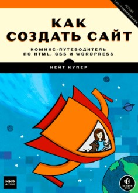

4) Как создать сайт. Комикс-путеводитель по HTML, CSS и WordPress. Нейт Купер, Ким Джи

Этот шедевр по изучению основ веб-программирования заслужил высокую оценку среди читателей и пользователей сети. Книга оформлена как комикс с короткими историями. После каждой отдельной темы с картинками идет пояснение с кусками кода и скриншотами. Книга-комикс понятна и проста. Ее оценили по достоинству как взрослые, так и школьники. На страницах издания описаны принципы работы HTML и СSS. Есть отдельная тема по CMS WordPress. Книга будет интересна читателям, которые только начинают познавать мир веб-программирования. Также подойдет детям школьного возраста и подросткам.
Следующая литература